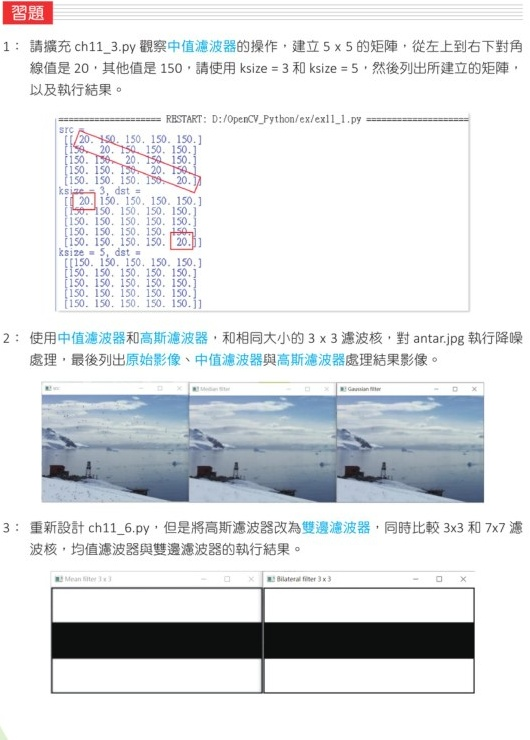

删除影像杂讯
在建立平滑影像时，会产生两种效果：一是降低噪音，另一是产生模糊。本章介绍的 OpenCV 平滑函数可以分成线性滤波器和非线性滤波器两类。
- 线性滤波器：均值滤波器
blur()、方框滤波器boxFilter()、高斯滤波器GaussianBlur()。 - 非线性滤波器：中值滤波器
medianBlur()、双边滤波器bilateralFilter()。
建立平滑影像需认识的名词
11-1-1 滤波核
以某一个像素为中心，这个像素与周围像素可以组成 n 列 m 行的 n x m 矩阵。当 n 等于 m 时，可以称为 n x n 矩阵。这样的矩阵称为滤波核，例如 3 x 3 与 5 x 5 滤波核。
| 滤波核大小 | 参与计算的像素数量 | 说明 |
|---|---|---|
3 x 3 | 9 个 | 以中心像素和周围 8 个像素进行计算。 |
5 x 5 | 25 个 | 参与计算的邻近像素更多，平滑效果更明显。 |
7 x 7 | 49 个 | 可产生更强的模糊效果，也更容易损失细节。 |
11-1-2 影像噪音
细看影像时，有时可以发现某个像素与周围像素差异非常大，这个像素就是影像噪音，也称为影像杂讯。例如中心像素值是 20，而周围像素值介于 147 到 155 之间，中心点颜色明显比周围深，就可以判断它是噪音。
11-1-3 删除噪音
当发现影像有噪音时，可以使用平滑处理或降噪处理，将异常像素修正为更接近周围像素的值。处理后，原本突兀的噪点会降低，影像整体看起来比较平滑。
11-1-4 影像降噪处理的方法
影像降噪处理的方法有许多，本章讲解下列常见方法。
- 均值滤波器。
- 方框滤波器。
- 中值滤波器。
- 高斯滤波器。
- 双边滤波器。
- 自定义滤波核。
均值滤波器
均值滤波器的英文是 Mean filter，是降低影像噪声的方法。直觉地说，就是删除影像中的杂讯。
11-2-1 理论基础
均值滤波器又称低通滤波器，基本上是将每一个像素当作滤波核的核心，然后计算滤波核内所有像素值的平均，最后让滤波核的核心等于此平均值。
以 3 x 3 滤波核为例，若中心像素是噪音，可以把 9 个像素相加再除以 9，得到新的中心像素值。若是 5 x 5 滤波核，则将 25 个像素值加总后取平均。
11-2-2 像素位于边界的考量
当像素位于影像边界时，滤波核有一部分会落在影像外。执行影像降噪时，常用的方法有两种：第一种是只取影像范围内实际存在的像素计算；第二种是扩展影像周围的像素，再用扩展后的影像进行计算。
11-2-3 滤波核与卷积
对于 5 x 5 均值滤波器而言，每个像素的权重相同，可以用一个每个元素都是 1 / 25 的矩阵表示权重。这个矩阵又称滤波核，有时候也称卷积核（Convolution kernel）。
原始影像与滤波核相乘的动作称为卷积计算，简称卷积（Convolution）。滤波核的列数和行数通常设为相等，且值越大，结果影像越模糊。
11-2-4 均值滤波器函数
OpenCV 的均值滤波器函数是 blur()，语法如下。
| 参数 | 说明 |
|---|---|
dst | 返回结果的影像，或称目标影像。 |
src | 来源影像，或称原始影像。 |
ksize | 滤波核大小，格式是 (高度, 宽度)。由于需要计算核心像素值，建议使用奇数，例如 3 x 3、5 x 5。 |
anchor | 可选参数，滤波核的锚点。默认值是 (-1, -1)，表示锚点在滤波核中心。 |
borderType | 可选参数，边界样式，建议使用默认值。 |
程式实例 ch11_1.py：均值滤波器函数 blur() 的应用

从执行结果可以看到，脸部杂讯变得比较弱。因为原始影像的杂质颗粒较大，使用 3 x 3 滤波核时，得到的是让杂讯变弱的效果；使用 5 x 5 与 7 x 7 滤波核时，降噪效果更好，但整体影像也会更模糊。
程式实例 ch11_2.py：使用 29 x 29 滤波核观察执行结果

29 x 29 滤波核时，影像会产生强烈模糊，参考原书第 11-9 页。方框滤波器
OpenCV 有提供方框滤波器，英文是 Box filter。这个方法可以选择是否对均值结果作归一化处理。
11-3-1 理论基础
以 3 x 3 滤波核为例，如果采用滤波核像素值的加总平均，则卷积计算所得到的结果与均值滤波器相同。若没有执行归一化，则只执行滤波核内像素加总，数值可能超过 255，输出影像会变得很亮，甚至接近白色。
11-3-2 方框滤波器函数
OpenCV 的方框滤波器函数是 boxFilter()，语法如下。
| 参数 | 说明 |
|---|---|
src | 来源影像。 |
ddepth | 输出影像深度，若设为 -1，表示与来源影像相同。 |
ksize | 滤波核大小。 |
anchor | 锚点，默认 (-1, -1)。 |
normalize | 是否正规化。默认 True；若为 False，只执行加总。 |
borderType | 边界样式，建议使用默认值。 |
程式实例 ch11_2_1.py：使用方框滤波器处理影像

中值滤波器
中值滤波器的英文是 Median filter，也是降低影像噪音非常好的方法。
11-4-1 理论基础
中值滤波器与均值滤波器观念类似，不过这个方法不是计算平均值，而是将要处理的滤波核内所有像素排序，然后取中间值作为中心像素的新值。中值滤波器对椒盐噪声特别有效。
11-4-2 中值滤波器函数
OpenCV 的中值滤波器函数是 medianBlur()，语法如下。
| 参数 | 说明 |
|---|---|
src | 来源影像。 |
ksize | 滤波核大小，必须是大于 1 的奇数，例如 3、5、7。 |
程式实例 ch11_3.py：使用简单的阵列了解中值滤波器的操作

程式实例 ch11_4.py：中值滤波器函数 medianBlur() 的应用

如果将中值滤波器结果与均值滤波器比较，降噪效果更明显，很多噪音可以被删除。不过使用中值滤波器时需要排序处理，因此会需要较多计算时间。
高斯滤波器
高斯滤波器的英文是 Gaussian filter，也称高斯模糊（Gaussian blur）或高斯平滑。高斯滤波器最重要的观念是：越靠近滤波核核心的像素权重越大，距离越远的像素权重越小。
11-5-1 理论基础
在均值滤波器中，滤波核内每个像素权重相同；高斯滤波器的滤波核不再全部是 1，也就是权重值不再全部相同。滤波核中心附近的像素较重要，外围像素影响较小。
进行高斯滤波器计算时，同样是将原始影像与滤波核执行卷积计算。实际应用中，高斯滤波器的滤波核可以有不同高度与宽度，但是 OpenCV 使用时通常会指定奇数大小。
11-5-2 高斯滤波器函数
OpenCV 提供高斯滤波器函数 GaussianBlur()，语法如下。
| 参数 | 说明 |
|---|---|
src | 来源影像。 |
ksize | 滤波核大小，宽度和高度应为正奇数。 |
sigmaX | X 方向的标准差，若设为 0，系统会依滤波核大小自动计算。 |
sigmaY | Y 方向的标准差，若省略或设为 0，会与 sigmaX 相同。 |
borderType | 边界样式，建议使用默认值。 |
程式实例 ch11_5.py：高斯滤波器函数 GaussianBlur() 的应用

双边滤波器
前面几节的均值滤波器、方框滤波器、中值滤波器和高斯滤波器，都可以降低噪音，不过也会让影像边界变得模糊。双边滤波器的特色是可以降低噪音，同时尽量保留边缘。
11-6-1 理论基础
双边滤波器在计算某一个像素的新值时，会同时考虑距离与色彩讯息。距离越近的像素权重越大；像素值越接近的像素权重也越大。如果某个邻近像素与中心像素的颜色差异太大，它的权重会被降低，因此边界比较容易被保留下来。
程式实例 ch11_6.py：使用均值滤波器与高斯滤波器处理黑白影像

从边缘影像可以观察到，均值滤波和高斯滤波都会让边界产生模糊。如果相同影像使用双边滤波器，边缘影像可以较好地被保留下来。
11-6-2 双边滤波器函数
OpenCV 提供双边滤波器函数 bilateralFilter()，语法如下。
| 参数 | 说明 |
|---|---|
src | 来源影像。 |
d | 滤波时每个像素邻域的直径。 |
sigmaColor | 色彩空间的标准差。值越大，色彩差异越大的像素也会互相影响。 |
sigmaSpace | 坐标空间的标准差。值越大，距离较远的像素也会互相影响。 |
borderType | 边界样式，建议使用默认值。 |
程式实例 ch11_7.py：相同影像使用均值、高斯和双边滤波器处理

2D 滤波核
除了使用 OpenCV 内建滤波函数，也可以自行定义滤波核，然后使用设定好的滤波核执行降低影像噪音的工作。OpenCV 使用 filter2D() 执行自定义滤波核。
| 参数 | 说明 |
|---|---|
src | 来源影像。 |
ddepth | 输出影像深度，若设为 -1 表示与来源影像相同。 |
kernel | 自定义滤波核。 |
anchor | 锚点，默认在滤波核中心。 |
delta | 计算结果加上的常数值。 |
borderType | 边界样式，建议使用默认值。 |
程式实例 ch11_8.py：使用自定义滤波核进行滤波处理

1. 请扩充 ch11_3.py，观察中值滤波器的操作，建立 5 x 5 的矩阵，从左上到右下对角线建立较大的噪音值，然后观察排序后的中值。
2. 使用中值滤波器和高斯滤波器，以相同大小的 3 x 3 滤波核，对 antar.jpg 执行降噪处理，最后列出原始影像、中值滤波器与高斯滤波器处理结果影像。
3. 重新设计 ch11_6.py，但是将高斯滤波器改为双边滤波器，同时比较 3 x 3 和 7 x 7 滤波核、均值滤波器与双边滤波器的执行结果。

4. 使用 unistar.jpg 影像重新设计 ch11_7.py，但是将滤波直径改为 9，同时列出执行结果。